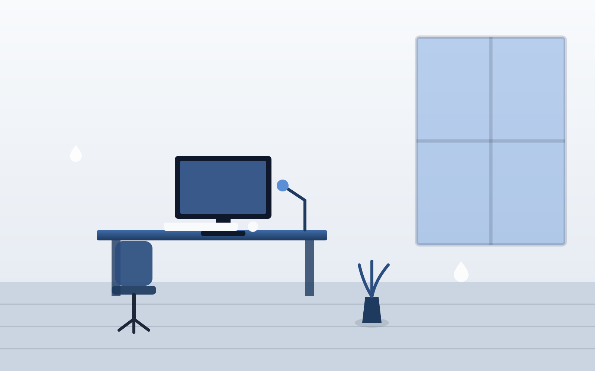

Nettoyage de bureaux à Pau : des locaux professionnels toujours impeccables
Bureaux, open space, salles de réunion, sanitaires : nous entretenons vos locaux selon un planning adapté à votre activité, sans jamais perturber vos équipes.
Demander un devis gratuitDes locaux propres renvoient une image professionnelle à vos clients, partenaires et collaborateurs, et contribuent au confort de travail au quotidien. HydroPropreté propose aux entreprises et indépendants de Pau un service de nettoyage de bureaux sur contrat, avec un interlocuteur unique et des horaires d'intervention pensés pour ne jamais gêner votre activité.
Pourquoi un contrat d'entretien régulier change tout
Un nettoyage ponctuel ne suffit pas à maintenir des locaux professionnels dans la durée : poussière, traces sur les vitres, sanitaires sollicités au quotidien. Un contrat d'entretien régulier évite cette dégradation progressive et garantit un niveau de propreté constant, visible dès l'arrivée de vos visiteurs. C'est aussi un gain de temps pour vos équipes, qui n'ont plus à se soucier de l'entretien courant des espaces communs.
Nos prestations pour vos locaux professionnels
- Bureaux et open space : dépoussiérage des postes de travail, sols, corbeilles et poubelles de tri.
- Salles de réunion : tables, chaises, vitres intérieures, équipements, avant ou après vos rendez-vous importants.
- Sanitaires : nettoyage et désinfection quotidienne ou selon la fréquence définie, réapprovisionnement en consommables sur demande.
- Espaces de pause et cuisine : plans de travail, évier, électroménager, poubelles.
- Vitres intérieures et cloisons vitrées : pour des espaces lumineux et sans traces (voir notre prestation dédiée de nettoyage de vitres).
- Sols : aspiration, lavage, traitement adapté selon moquette, carrelage ou sol souple.
- Accueil et espaces de réception : premiers espaces vus par vos visiteurs, toujours soignés.
Un cahier des charges construit avec vous
Chaque entreprise a ses propres contraintes : effectif, surface, horaires d'activité, présence de public. Nous établissons systématiquement un cahier des charges précis, détaillant :
Visite de vos locaux
Un état des lieux permet d'évaluer les besoins réels et les points d'attention spécifiques à votre activité.
Définition de la fréquence
Quotidienne, plusieurs fois par semaine ou hebdomadaire, selon l'effectif et la fréquentation de vos locaux.
Devis détaillé
Un tarif clair, prestation par prestation, transmis sous 24h pour validation.
Mise en place du contrat
Planification des passages en dehors de vos heures d'activité et désignation d'un interlocuteur unique.
Suivi régulier
Un point de suivi permet d'ajuster la prestation si vos besoins évoluent.
Des horaires qui s'adaptent à votre activité
Tôt le matin avant l'arrivée des équipes, en soirée après la fermeture, ou certains week-ends pour les locaux recevant du public : nos interventions sont planifiées pour ne jamais interrompre votre activité professionnelle.
Toutes tailles de structures
D'un cabinet indépendant d'un ou deux bureaux à des locaux de plusieurs dizaines de postes, le contrat est toujours dimensionné à la réalité de vos espaces — pas de forfait standard imposé.
Transition depuis un autre prestataire
Vous souhaitez changer de société de nettoyage ? C'est possible à tout moment. Nous assurons une reprise du contrat sans interruption de service pour vos équipes.
Zones d'intervention
Nous intervenons auprès des entreprises situées à Pau et dans les communes environnantes :
Demander une proposition pour vos bureaux
Contactez-nous pour organiser une visite gratuite de vos locaux. Nous vous transmettrons un devis détaillé sous 24h, adapté à la taille de vos espaces et à vos horaires d'activité via notre formulaire de contact.
Tout savoir sur le nettoyage de bureaux à Pau
Après une visite de vos locaux, nous établissons avec vous un cahier des charges précisant la fréquence de passage et les prestations incluses, puis nous transmettons un devis détaillé sous 24h.
Bureaux individuels et open space, sanitaires, salles de réunion, espaces de pause/cuisine, vitres intérieures, sols, vidage des corbeilles et poubelles de tri selon le cahier des charges défini avec vous.
Oui, c'est même ce que nous recommandons : tôt le matin, en soirée ou certains week-ends, pour ne jamais perturber l'activité de vos équipes.
Nous intervenons aussi bien pour un cabinet d'un ou deux bureaux que pour des locaux de plusieurs dizaines de postes. Le contrat est toujours adapté à la taille réelle de vos espaces.
Elle dépend de l'effectif et de la fréquentation des locaux : un passage hebdomadaire convient à une petite structure, plusieurs passages par semaine sont recommandés pour des locaux très fréquentés ou recevant du public.
Oui, une transition est possible à tout moment, sans interruption de service pour vos équipes.
Oui, notre organisation en équipe garantit la continuité du service même en cas de congé ou d'absence imprévue.